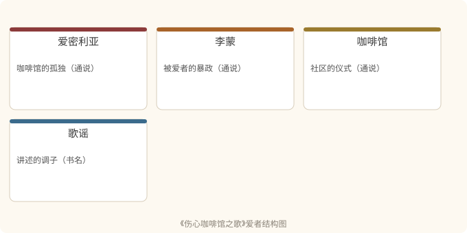

伤心咖啡馆之歌
一、基本信息
| 作者 | 卡森·麦卡勒斯 |
|---|---|
| 成书/出版 | 1951年（Britannica B331：The Ballad of the Sad Café——1951） Carson McCullers — Encyclopaedia Britannica（百科全书） |
| 国别/地区 | 美国 |
| 时代 | 近代 · 20世纪50年代初 |
| 体裁 | 中篇小说 |
| 语言 | 英语 |

《伤心咖啡馆之歌》爱者结构图（主题·结构图）
二、创作背景
Britannica（B331）：The Ballad of the Sad Café——1951。
Britannica（B331）：麦卡勒斯——'the incompatibility of lover and beloved'（爱者与被爱者的不相容）。
题材（通说待核）：爱密利亚小姐的咖啡馆与驼背李蒙——被爱者的暴政。
三、内容脉络
（通说待核）爱密利亚的咖啡馆：小镇的公共空间。
（通说待核）驼背李蒙的'暴政'与马文·梅西的归来。
四、主要人物表
| 人物 | 身份 | 说明 |
|---|---|---|
| 爱密利亚小姐 | 咖啡馆主人 | （通说待核，B331未载） |
| 李蒙 | 驼背表亲 | （通说待核） |
五、主题与艺术特点
- '爱者与被爱者的不相容'（B331）。
- 咖啡馆作为社区仪式（通说待核）。
- '歌谣'的叙事调子（书名语境）。
六、影响与评论
- Britannica：'the incompatibility of lover and beloved'（B331）。
Carson McCullers — Encyclopaedia Britannica（百科全书） - Britannica：南方哥特语境（作者页交叉）。
Carson McCullers — Encyclopaedia Britannica（百科全书）
七、阅读建议
难点
- '歌谣'的叙事腔。
- 南方小镇的性别语境。
- 《伤心咖啡馆之歌》中译本（人民文学等——通说待核）。
- 英文原版。
麦卡勒斯中篇首选。
八、待核实
- 爱密利亚/李蒙人名核对（B331未载）。
- 1951年出版细节待核。
- 1991年电影改编说待核。